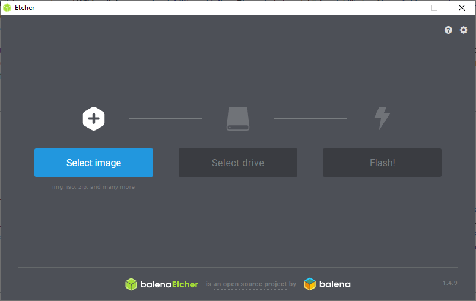

2020-02-17: Academic recap and dietary planning
Quite a number of things are starting to stack up on my "to-do" list. My methodology once important matters start to hypertrophize is to make a write-up of each important
thing, the time span of which it needs to be dealt with (such as deadlines), and a daily plan that I then mark as green if achieved, or red if missed.
Generally, you want to see a trend of greenness, but that is not always the case. There is a kind of game like satisfaction to mark it in your document processor,
(Libre Office in my case), and have it on (digital) paper that you did this; you accomplished it. Giving the various projects code names, I find, helps as well.
Thus far in my academic program, I am at what we in sweden call the "C" level, where it's preceded by an A and B course that. My line of work, or will be line of work,
requires in actuality only academic competence in the A and B course of this field: However, I am missing one part course that I'm taking this semester as well.
Such stack-up, and while actually being 200% study effort, does not in practice become 200%: I already have some pre-knowledge from the time I actually studied the course.
It's just that I need to do the examination for it. Either way, you have to de-rust yourself and de-dust the literature. An overview, a to-do list, a plan, helps.
Similarly, I will use this method when I plan on either gaining or losing weight. It's simple to do a protocol that gives you an overview and dates to stick to, such as this:
2020-02-12: 79.7KG
2020-02-16: 78.8kg
2020-02-19:
2020-02-23:
2020-02-26:
2020-02-30:
These are twice a week weigh-ins for the rest of February. I did my general meal planning on Cronometer, as it also has a calculator for the micro nutrients you get from the food.
That should probably be taken with a grain of salt (no pun intended) as your need for micro nutrients will, as I understand it, vary a great deal across personal metadata,
your age, sex, special needs, medical or otherwise. Even geographical discrepancies should mean you have a different supplemental need for Vitamin D, or Vitamin Deficient,
as we could call it in northern lands with less sunshine. But they are probably good estimates. My current meal plan on an average lifting day:
Breakfast: Yogurt with oats, flax, sunflower and pumpkin seeds; an apple; a protein shake; a creatine supplement; black coffee.
Pre-workout: Two slices of toast with cheese and maybe some fruit
Post-workout: A protein shake
Dinner: A protein source, a carb source, mixed vegetables and some light sauce. Usually chicken, potatoes, broccoli and fucking cholula sauce.
Pre-sleep: Two slices of toast, and half a liter of 1½% milk ("Middle milk")
Around 2300kcal on lifting days, and removing the "pre-sleep" meal on non-lifting days puts me at around 1950kcal.
This usually puts me at a macronutritional intake of 170g protein, 220g carbohydrates, and 85g of fat, and according to Cronometer a pretty decent micronutritional intake.
Some supplemental intake of Vitamin D would be necessary once or twice a week, as my protein shakes are water based and not with milk.
This might not be what I in practice actually eat in a day: since 2300kcal and particularly 1950kcal is so low for an adult male with my activity level, it leaves quite a bit
of wiggle room for some daily snacking. Maybe I eat some grapes. Maybe I eat some leftover chicken or a cookie. Or drink an extra glass of milk.
I should still be in a weekly total deficit, so long as I don't waiver off too crazily.
Elisson out.
2020-02-12: Exercise/health assessment and more
I've had to make some work arounds with my work outs since lower to mid back pain and sciatica like symptoms have been flaring up, together with some shoulder issues.
Quite a lot of key exercises have been out of rotation for some time: can't handle squats. Deadlifts are forget about it. Normal bench presses out too cos of the above reason.
So as for now and likely the foreseeable future I'll have to make do with alternative lifts that do not agitate the lower back and shoulders, and I think I might have found them.
The premises are: 1. Little to no pain during and after work outs, 2. I have to be able to progressively overload the lifts, and 3. I have to at least not hate doing them.
The squats, normally touted as the chief glute exercise, primarily targets the quads: for quads I now do reverse lunges with dumbbells for high reps. This one is easy to overload
by a variable of methods: increased weights on the dumbbells, more reps, quicker tempo, shorter rest periods, longer strides, and what not. The reason I do them reverse is,
the impact from stepping forwards and pushing down on my knee tends to lead to some pain. Stepping backwards seem to eliminate this factor and makes it: pain free.
The better (in my opinion and according to some EMG data) glute exercise is in the hip thrust. This is a fantastic lift and one of my favorites.
The real fun comes with the floor presses. I do them in 2 ways: with a barbell (heavy) and dumbbells (higher volume). Doing "bench" presses off the floor does shorten the
range of motion, and I don't know much (at all) about physiology here: I just know I feel less pain in my shoulders if I don't go all the way down to my chest.
I found a demonstration by Bret Contreras about how to get the barbell into position for a floor press without a spotter: you basically glute bridge the barbell into position.
Genius, I thought.
Together with that I do some simple accessory exercises. I refrain from doing standing barbell presses - as they compress the spine and agitate sciatica.
For shoulders I only do the floor presses, seated dumbbell press, and lateral raises. Further chest targeting is by dumbbell flyes done on the floor after dumbbell floor press.
Sample workout that I tend to stick to:
A: 3x10-15 Hip Thrusts / 3x05-10 Floor Press / 3x3-F Pull-ups / 3x10-15 Lateral Raises
B: 3x10 Reverse Lunges / 3x10 Dumbbell Floor Presses / 3x10 Floor Flyes / 3x10 Chin-ups
C: 3x10-15 Hip Thrusts / 3x05-10 Floor Press / 3x05-10 Dumbbell Press / 3x3-F Pull-ups
I do both dumbbell and barbell curls sporadically throughout the week. The one pebble in the shoe is the lack of hamstring focused exercises. The reverse lunges and hip thrusts
should do something for them, but not as much as what a deadlift or romanian deadlift might do. But it is what it is.
On a whole different note, I was quite happy to see that my oscar guesses were mostly wrong. I was pretty invested in Joaquin Phoenix getting best actor and Hildur Gudnadottir
best original score for Joker. Great stuff. Parasite deserved every oscar it got.
Elisson out.
2020-02-09: Migrating from proprietary software to FOSS
I should preface this by mentioning that I have not done any sort of programming or coding myself, save for some visual basic (if I recall correctly)
in upper secondary school nearly 15 years ago. I think we got to make a calculator. That's about the extent of it. Just so that's out there.
Terminology:
FOSS - Free Open Source Software.
E2EE - End 2(to) End Encryption
RAAPA - Rogue Archivist; Aspiring Professional Archivist
The benefits and drawbacks of FOSS is a discussion for another time; there is an amalgam of online lists and discussions that I don't want to get into.
In this blog post I will lay out some alternatives that are FOSS together with some links to their respective donation pages if available, with some
information on how I myself moved from proprietary software to FOSS. Another important thing to note is that there isn't always a mirroring of proprietary
to FOSS: many of the programs listed below aren't per se alternatives to anything; they just are what they are - great utilities.
There is quite a lot to go over, so I'll just get into it straight away.
One of the most radical changes came with my purchase of a laptop. Instead of using the preinstalled windows 10 (a shitty standard), I used a USB drive to make a flash drive
with a different operative system using Etcher:

Balena.io/etcher
This process was fairly straight forward and only took a few minutes. The OS that I finally decided on, after some correspondence with more technically experienced and savvy people
than myself, is Linux Mint 19.3 64-bit Cinnamon edition. The benefits of this is that, as I understand it (and the way I'm experiencing it) is that it is very linux beginner friendly.
There are, of course, numerous Linux distros, but thus far I have been more than satisfied with Linux Mint, and I would recommend it to anyone taking their first step from Windows to Linux.

Linuxmint.com/donors
There are valid concerns about gaming on Linux machines; my understanding of it is that it has in recent years become much better, with programs like Wine and databases like ProtonDB.
An alternative that I am still working on and intending to do on my desktop is what's called "Dual Boot" - one machine, two operative systems. That would allow you to try out gaming on
Linux and see how it plays out before you make the eventual decision to get rid of Windows altogether. This subreddit has invaluable information: R/Linuxgaming/wiki.
As far as communication goes, since whatsapp was purchased by Facebook, I decided to get rid of it. I also, most recently, deleted my facebook account and along with it, Messenger.
For people concerned with their basic human rights (as privacy is) the better messaging service is Signal. It is cross-platform and messages are end-to-end encrypted, meaning that
consequentially, regardless of if the content is being monitored, it can not be read by anyone without access to the actual devices on which the messages are being sent to or received from.
They would just see randomly, scrambled nonsensical letters and numbers. This makes targeted advertising through apps/software as such impossible. There are, interestingly,
cases where FBI has demanded user data from signal users but haven't been able to get much out of it.

Signal.org/donate
Similar to how Signal is a messaging app that is E2EE, my current E-mail service is also E2EE. I chose to go with Protonmail. They have a lot of valuable
information on their website, and it is something that a lot of privacy oriented people will generally refer you to.

Protonmail.com/donate
Now; being a rogue archivist; aspiring professional archivist, (or a RAAPA as I've just now dubbed it), I require some accessibility to platforms owned by corporations I fundamentally
disagree with. Instagram is owned by facebook; Youtube is owned by google. Instagram has recently been requiring you to log in through an account to view images (although this doesn't always
happen for some reason) and I've yet to delete my instagram account, though I no longer use it. Because I digitally archive a lot of Weightlifting stuff,
I still have to use both Instagram and Youtube, to snatch (no pun intended) as much of it as possible. Luckily, there are plenty of alternative websites that link to instagram pictures (such as saveig.com or imgtagram). For YouTube, I strongly recommend FreeTube.

Liberapay.com/freetube
Oh, and for what it's worth, to download videos from youtube I use Youtube-DL without a GUI and through the Linux terminal. While it is called
"youtube-dl" it actually works on about a thousand websites; it is indeed quite marvelous.
Proper privacy oriented practice should also include some kind of VPN (Virtual Private Network). Here I would refer you to Privacytools.io/providers/vpn/
My choice is and has always been Mullvad, and I can recommend them (as does Privacytools.io) but don't take our word for it; do your own research.
A few media oriented FOSS:s I use: I like to make music and recently I've been learning how to use what is known as Linux MultiMedia Station, or LMMS.
It is a digital audio workstation quite similar to FL studio or Cubase. I am still working my way around it, but I'm including it to shed some light to it as it is quite good.

LMMS.io/get-involved
One of the things, that is also one of the more radical for me, was to stop using Spotify. I strongly disagree with their privacy policy, that you can read more about here.
There are other ways to get your hand on music (legal or not so legal), but I will say that the music player/library that I now use on desktop is Audacious
On my smartphone I use Musicolet and for podcasts I simply download them from podcast hosting websites and play them through musicolet.
For playing videos, I use (and likely you as well) VLC Media Player or Celluloid (came with Linux Mint).
But smartphones are a different monster. You could look into the Librem 5 model that looks very promising regarding privacy, or if your phone supports it,
the Lineage Operating System. My phone sadly doesn't support it, but rest assure my next phone will.
Some additional tools that are grateful for optimized privacy:
It is unfortunate that languages are now adapting the verb "google". I would suggest using the terminology "internet search" instead, to take away from an effective cultural monopoly that
google has on search engines. I personally use either DuckDuckGo or Startpage. The web browsers that I use are either TOR
or a buffed up Firefox. Buffed up how exactly? By a number of very handy, privacy oriented plugins:
To name a few.
That pretty much covers most of it. Reaching a nirvana-like stallman-esque level of privacy shouldn't be a dichotomy of do or don't commit to privacy oriented
practices. Each and every one has to make the choice of how far they are willing to comfortably go, and how long time it will take for them.
I am at a place where I am more comfortable without certain social media memberships than I am with them.
There is quite a bit of gatekeeping going on within the privacy movement, but it is in my view, important to strike out a balance here:
We ought to be conscientious about peoples needs, understanding, willingness and experience level when recommending what privacy measures to take, without
excusing or not shedding light on corporations or nation states privacy invasions. These things can take time, and for all intents and purposes should take time.
Elisson out.
2020-02-07: The academy awards and 2019 in film
One of my chief interest for a number of years has been film, so much so that I am seriously considering writing my bachelor in archival science
about film archives. I am not exactly a fan of the format of the academy awards - competitive elements in the cultural sphere is something I've
never really recognized as unproblematically valid. But it would be a lie if I'd say I didn't get any kind of enjoyment out of it -
I am not spared from a tribal mindset that makes you "pick sides" about what should "win", and certain nominated people or titles has piqued
my interest in the movies and, ultimately causally made me watch them. So as such I decided to make my very own wishlist over how the awards
in the categories I'm most familiar with will pan out. These are not predictions per se, but more so either what I want to win or what I believe
deserves to win. Here it is:
Academy Awards 2020
| Category |
Nominees |
My choice |
| Best Motion Picture |
1917
Jojo Rabbit
Joker
Le Mans '66
Little Women
Marriage Story
Once Upon A Time In Hollywood
Parasite
The Irishman |
1917 |
| Best lead actor |
Adam Driver (Marriage story)
Antonio Banderas (Dolor y Gloria)
Joaquin Phoenix (Joker)
Jonathan Pryce (The Two Popes)
Leonardo Dicaprio (Once Upon a Time...) |
Joaquin Phoenix (Joker) |
| Best Lead Actress |
Charlize Theron (Bombshell)
Cynthia Erivo (Harriet)
Renée Zellweger (Judy)
Saoirse Ronan (Little Women)
Scarlett Johansson (Marriage Story) |
Saoirse Ronan (Little Women) |
| Best Supporting Actor |
Al Pacino (The Irishman)
Anthony Hopkins (The Two Popes)
Brad Pitt (Once upon a time...)
Joe Pesci (The Irishman)
Tom Hanks (A beautiful day in the neighborhood) |
Joe Pesci (The Irishman) |
| Best Supporting Actress |
Florence Pugh (Little Women)
Kathy Bates (Richard Jewell)
Laura Dern (Marriage Story)
Margot Robbie (Bombshell)
Scarlett Johansson (Jojo Rabbit) |
Florence Pugh (Little Women) |
| Best Directing |
Bong Joon Ho (Parasite)
Martin Scorsese (The Irishman)
Quentin Tarantino (Once upon a time...)
Sam Mendes (1917)
Todd Phillips (Joker) |
Martin Scorsese (The Irishman) *It's a SHAM that Lulu Wang was not nominated for The Farewell |
| Best original score |
Thomas Newman (1917)
Hildur Guðnadóttir (Joker)
Alexandre Desplat (Little Women)
Randy Newman (Marriage Story)
John Williams (Star Wars: Rise of Skywalker) |
Hildur Guðnadóttir (Joker) |
So, yeah. Not including a wide number of categories that are just less interesting to me either because I don't particularly care about them, or because I haven't
seen enough titles in them to make a valid call. I will say that the SNUB OF THE YEAR award goes to the academy awards for not fucking nominating The Farewell for
anything, as well as not nominating Willem Dafoe for The Lighthouse. All this said, my personal top 10 list of 2019 goes like this:
1. Joker
2. The Lighthouse
3. The Irishman
4. The Farewell
5. Parasite
6. 1917
7. Little Women
8. Dolor y gloria (Pain and Glory)
9. Paddleton
10. The Gangster, the Cop, the Devil
Elisson out.